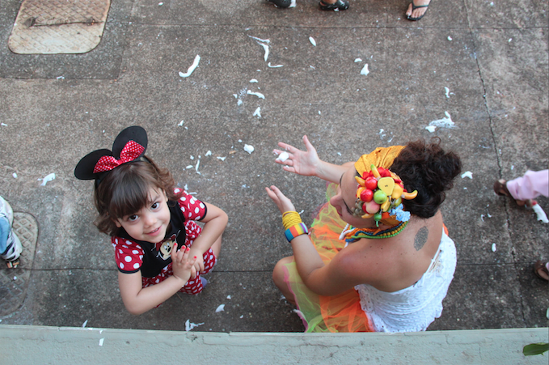
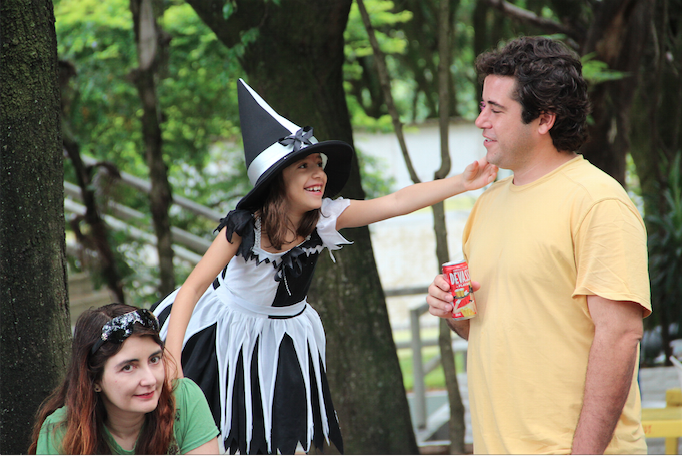
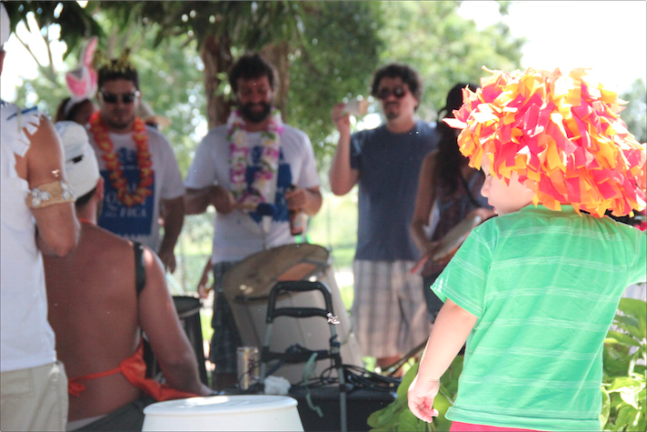
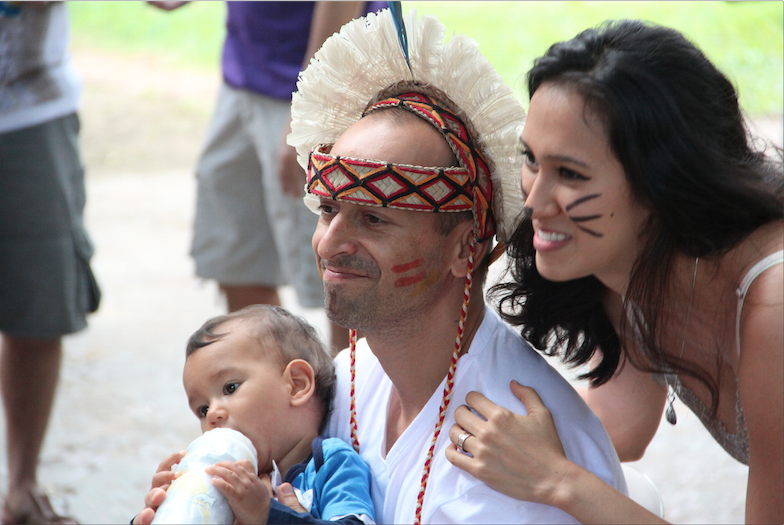

Muitas coisas no Vai Quem Fica são pensadas para que as crianças também possam participar. O horário, as músicas, a quantidade de pessoas… Então muita gente acha que somos um bloco infantil.
Não é verdade.
Não somos um bloco DE crianças. Somo um bloco COM crianças. A diferença é sutil, mas profunda.
Quem tem filho pequeno normalmente divide seu tempo. Tem hora de fazer programa de criança, e tem hora de fazer programa de adulto.
Na hora de fazer o programa da criança, os pais vão para acompanhá-las. Eles podem até se divertir, mas se pudessem escolher com certeza prefeririam ir ao cinema, a um restaurante, ou qualquer outra coisa que provavelmente não seria o momento ideal para os pequenos.

Na hora de fazer o programa dos adultos, a criançada normalmente fica na casa da vovó. Ou fica com o papai pra mamãe sair, ou o contrário.
(Tem gente que leva o menino pro restaurante, mas isso não costuma dar muito certo…)
O que muitas vezes parece faltar na vida familiar (e no carnaval!) é um momento onde TODOS brincam JUNTOS. Pais E filhos. Talvez porque a maioria dos pais não seja muito de brincadeiras…
Mas o carnaval é por excelência um momento de brincadeira! Um dos raros momentos, diga-se de passagem, em que os adultos se permitem de fato brincar!
Só que a maioria dos carnavais por aí acaba sendo programa só de adultos, onde as crianças não têm vez…

Então criamos os carnavais DE crianças, onde os adultos colocam fantasia nas crianças e as levam pra brincar como se as levasse ao parquinho. Sentam num banco e esperam o programa da criança acabar.
Será que não conseguimos criar um carnaval onde pais E filhos se divirtam?
Juntos ?!
Porque não saímos TODOS fantasiados? Porque não podemos correr atrás deles, dançar e cantar COM eles?
Não precisamos cantar só a música da baratinha. Mas também não precisamos cantar a música da bunda…
Não precisamos beber guaraná. Mas também não precisamos encher a cara!
Será que não sabemos achar um meio termo e fazer uma brincadeira que seja saudável e divertida pra todo mundo?
Claro que isso é possível! Nós vimos isso acontecer no Cordão Umbilical, lá no Rio! Já vimos isso acontecer no Tesourinhas aqui em Bsb… Nós já fizemos isso dois anos seguidos no Vai Quem Fica e foi massa demais!

Leve seus filhos pro carnaval DE criança também… E vá no seu carnaval de adulto também… Tem vários deles à tarde e à noite!
Mas quando vier pro Vai Quem Fica, lembre-se disso: vamos sair JUNTOS. Nos fantasiar JUNTOS. Brincar JUNTOS.
Leve seus filhos um pouco mais a sério. E seja você também um pouco mais criança!
Deixe os exageros pra mais tarde, e vamos dar a eles o exemplo do carnaval que queremos vivo apesar da loucura desse nosso mundo ‘moderno’.
Vamos achar a fineza e a sutileza que mora na dobra.
Onde muitos acreditam haver uma contradição, achemos o equilíbrio.
Vamos?